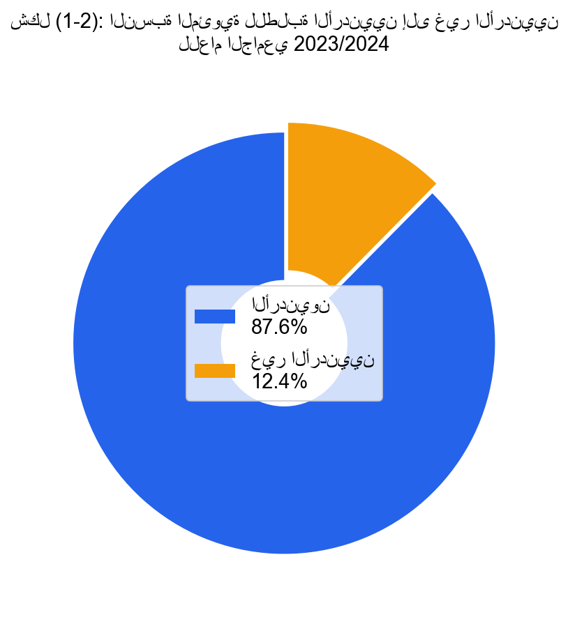

العام الجامعي 2023/2024
بلغ عدد الطلبة غير الأردنيين (840) طالبًا وطالبة في العام الجامعي 2023/2024، مقارنةً بـ (1,126) طالبًا في العام السابق، بانخفاض نسبته (25%). ويُعزى هذا الانخفاض إلى التحديات الاقتصادية الإقليمية والمنافسة المتزايدة من الجامعات في دول الجوار.
ويوضح الجدول (1-3) أعداد الطلبة تبعًا لجنسياتهم، التي بلغت في مجموعها (33) جنسية، في الفصلين الدراسيين: الأول والثاني. وشكّل الطلبة الفلسطينيون النسبة الأكبر من الطلبة غير الأردنيين، يليهم الطلبة السوريون والعراقيون.
وكانت نسبة الطلبة الأردنيين إلى غير الأردنيين في الفصلين: الأول والثاني ما يقارب (87.6% : 12.4%)، كما هو موضح في الشكل رقم (1-2).
وتعمل الجامعة على توفير بيئة جامعية جاذبة، ومناخ جامعي متوازن يمتاز بالأمن والرفاه الجامعي، ما يُسهم إيجابيًا في بناء مجتمع جامعي متعاون ومنسجم، ويُعزز من قدرتها على استقطاب المزيد من الطلبة الدوليين في الأعوام القادمة.

| الجنسية | الفصل الأول | الفصل الثاني |
|---|---|---|
| الأردنية | 6,014 | 5,954 |
| الفلسطينية | 330 | 313 |
| السورية | 196 | 174 |
| العراقية | 171 | 149 |
| العمانية | 50 | 43 |
| المصرية | 44 | 45 |
| اليمنية | 25 | 26 |
| الأمريكية | 13 | 14 |
| اللبنانية | 12 | 11 |
| الليبية | 10 | 10 |
| السعودية | 9 | 8 |
| الكندية | 9 | 9 |
| البريطانية | 6 | 6 |
| جنسيات أخرى (20) | 32 | 32 |
| المجموع | 6,921 | 6,794 |